论文：Strata: Hierarchical Context Caching for Long Context Language Model Serving
作者：Zhiqiang Xie（Stanford & NVIDIA）、Ziyi Xu（上海交通大学）、Mark Zhao（CU Boulder）、Yuwei An（CMU）、Vikram Sharma Mailthody（NVIDIA）、Scott Mahlke（NVIDIA & 密歇根大学）、Michael Garland（NVIDIA）、Christos Kozyrakis（NVIDIA & Stanford）
发表：OSDI 2026（USENIX Symposium on Operating Systems Design and Implementation，Track 1 "KV Cache and Long Context" session；USENIX OSDI'26 技术场次）；arXiv:2508.18572v2（2025-08-27 提交的 TeX 源码，arXiv）
长上下文 LLM 服务面对一对矛盾：模型能处理的上下文越来越长（128K、1M token 已成主流），但 GPU 显存装不下这么多 KV cache，生产系统不得不把缓存分层到 CPU 内存和 SSD。问题出在"搬回来"这一步——把缓存从 CPU 内存搬回 GPU 的带宽利用率惨不忍睹：一份 8192 token 的 Llama-3.1-8B KV cache 加载只达到 PCIe 5.0 理论带宽的约 22%，GH200 上更跌到约 5%。原因有两类：分页布局让一个序列的缓存散布在大量不连续的页中，传输粒度只有几 KB（打不满带宽）；现有调度器按"prefill 计算能掩盖加载时间"的旧假设组批，长上下文下加载时间反超计算，系统变成 loading-bound（74% prefill 时间阻塞在 I/O，吞吐降 4 倍）。
Strata 用三个机制回应这两个原因。GPU-assisted I/O用 CUDA kernel 代替传统的 cudaMemcpyAsync 传输——数千线程各搬一小块数据，并发与传输粒度都大幅改善；用少量大 block 把 kernel 关进少数 SM 不影响计算；让 GPU 保持 layer-first 计算布局，host 与存储用 page-first 传输布局，布局转换由 I/O kernel 内一次算术完成。Cache-aware 调度把 PCIe 带宽当成一等资源：transient node 标记避免 delay hit（同一缓存"正在计算中"时的重复 prefill），均衡组批（load/compute 比例阈值 100）避免 loading-bound，bubble filling 在不可避免的空泡里插入 decode 批填充。H200 上的实验显示，对比 vLLM+LMCache 吞吐最多提升 5 倍、对比 TensorRT-LLM 最多 3.75 倍，短上下文不退化[C26]。
本文假设读者已熟悉 KV cache、PagedAttention、前缀缓存、标准注意力、GPU 执行模型、GPU 通信。贯穿场景：一份 20,000 token 的产品手册的文档问答服务（与 LooGLE avg 输入 21,613 token 同量级），三个客服请求 A、B、C 相继到达，Llama-3.1-8B（32 层、8 KV 头、head_dim 128、bf16，每 token 128 KB）下手册缓存约 2.5 GB——已超出单请求显存预算，分层与跨层搬运不可避免。
把缓存的 KV cache 从 CPU 搬回 GPU 为什么会成为主要瓶颈？
两个独立来源。其一，PagedAttention 为显存管理把页切到 1–32 token，一个序列的 KV cache 散布在大量不连续页中（页 1 的页里只有 KB 级数据，TensorRT-LLM 32、vLLM 16、SGLang 1），跨内存层传输粒度只有几 KB——打满 PCIe 5.0 需 1–2 MB 传输，实测 8192 token 加载只达约 22% 带宽、GH200 上约 5%。其二，现有调度器假设 prefill 计算能掩盖加载延迟，长上下文下该假设失效（加载量大、新 token 少），系统 loading-bound——LooGLE 上 74% prefill 时间阻塞在 I/O，吞吐降 4 倍。加大页改善 I/O 但 hit rate 与 TTFT 显著恶化（页 1$\to$1024，TTFT 最多 2x、P90 2.9x），是根本性权衡。完整论证见第 1 章。
GPU-assisted I/O 如何让小页传输打满带宽，代价是什么？
不反复调用 cudaMemcpyAsync（受 CPU 侧并行度与驱动队列限制），而是启动 CUDA kernel：数千线程各从源读入寄存器再写出。优点：并发从 CPU 的数十提高到 GPU 的数千；高效粒度低至 128 字节（多数架构），单页 KB 级传输也高效；kernel 内轻量计算免费，布局转换近乎零开销。代价与控制：I/O kernel 与计算 kernel 争寄存器/执行周期/cache——Strata 用少量大 block（2 个 1024 线程 block）诱使硬件调度器把 I/O 圈进极少数 SM，配合绕过 cache 的指令；实测 50 GB/s 吞吐、prefill 性能损失 <5%、decode 10%，默认 2 block 加载 + 1 block 备份。布局解耦：GPU 保持 layer-first（与逐层计算对齐）、host/存储用 page-first（页内各层连续，利于整页大块传输）；I/O 线程对偏移多做一次算术即可在途转换；磁盘加载 8192 token 延迟最多降 4 倍。完整论证见第 2、3 章。
cache-aware 调度如何避免 loading-bound 与 delay hit？
三阶段。第一，delay hit 延迟执行：HiRadixTree 引入 transient node（in-queue/in-flight 标记），匹配到 transient node 的请求推迟一轮、置于队首，避免对同一未就绪上下文重复 prefill；阈值默认 100 个匹配 token。第二，均衡 batch：按 load/compute 比例（默认阈值 100）判断加入请求是否使批 loading-bound，不 bound 则加入并优先吸收与其 bundle hit（共享上下文）的请求，bound 则进降级列表、批不满再补；防饿死条款保留原序。第三，bubble filling：仍 loading-bound 时推迟 prefill、插入 decode 批并行——decode 饱和 HBM 带宽、加载饱和 PCIe 带宽，资源基本不冲突。完整论证见第 4 章。
Strata 的收益有多大、在什么条件下成立？
H200、三模型、四数据集。LooGLE 上同 TTFT 吞吐：Llama-8B 对 SGLang-HiCache/vLLM-LMCache/TensorRT-HiCache 分别 3.2$\times$/2.6$\times$/1.9$\times$；Qwen-14B 3.9$\times$/2.1$\times$/1.9$\times$；Llama-70B 5$\times$/5$\times$/3.75$\times$（abstract 的 5x/3.75x 即此行）。ReviewMT、ShareGPT、NarrativeQA 预热稳态全套数字见第 5 章。条件：长上下文 prefill 主导负载、分层缓存已必要（非分层系统迅速耗尽显存）、1TB pinned DRAM 配置（GH200 400GB）、disk 未纳入端到端对比。消融：调度单独 1.8x、I/O 单独 2.3x 峰值吞吐（相对 SGLang-HiCache）；低请求率下调度收益更大，高请求率下 I/O 主导。SGLang-HiCache 最优页 512 也只有 Strata-IO 的 93%——Strata 免去页大小调参。GH200：I/O 机制把持续带宽 40$\to$150 GB/s；调度是吃满新硬件的必要条件。短上下文无退化（ShareGPT）。完整数据见第 5 章。
Strata 不解决什么问题，适用边界在哪里？
解决：单机内 GPU$\leftrightarrow$CPU（及存储）KV cache 搬运带宽利用、加载与计算的资源平衡、重复 prefill。不解决：跨实例全局缓存协调（Mooncake/MemServe 方向）、近似/压缩缓存（CacheGen/CacheBlend）、显存容量本身（靠分层 CPU DRAM 提供容量）、模型结构（稀疏注意力）。结论成立条件：长上下文 prefill 主导、分层缓存已成必需；实验用 1TB pinned DRAM（GH200 400GB）。条件不满足时：短上下文收益趋近于零（但无退化）；cache distance 最小（高局部性）时 delay hit 缓解贡献最大（+42%）；最大距离时 I/O 机制贡献最大（+95%）而调度贡献小。完整分析见第 6 章（评价）。
| 术语 | 含义 |
|---|---|
| KV cache | 推理时缓存的注意力 key/value 张量（详见 KV cache） |
| prefill / decode | 一次性并行处理输入的阶段 / 逐 token 自回归生成的阶段 |
| TTFT（Time To First Token） | 请求到达至第一个输出 token 的延迟 |
| HBM / pinned memory | GPU 高带宽显存 / 锁页主存（DMA 可直接访问） |
| PCIe / DMA | CPU-GPU 互联总线 / 不经 CPU 干预的内存直传引擎 |
| cudaMemcpyAsync | CUDA 异步拷贝 API（Strata 之前分层系统的传输方式） |
| page / page size | KV cache 分页单元 / 每页 token 数（详见 PagedAttention） |
| hit rate | 命中缓存而免于重算的 token 比例（详见 前缀缓存） |
| loading-bound / compute-bound | 批的受限资源是 I/O 带宽 / 计算能力 |
| delay hit / bundle hit | 同一缓存计算中的重复 prefill / 共享上下文的批内复用 |
| bubble filling | 批 loading-bound 时插入 decode 批填充空泡 |
| P-D co-location | prefill 与 decode 批在同一 GPU 时间交替执行的部署形态 |
| HiRadixTree / transient node | SGLang RadixTree 的扩展（带页表与元数据） / 不指向内存的暂态节点 |
| SM / CUDA block | 流式多处理器（GPU 调度单元） / CUDA 线程块（详见 GPU 执行模型） |
分层缓存解决了"存得下"，但搬回来"成为"了新的瓶颈。本章用两层证据（机制 + 实验数字）回答两个具体问题：为什么分页让传输打不满带宽，为什么加大页不解决问题反而引入新问题；以及为什么现有调度器把这一困境再放大一层。
KV cache 的大小随 token 数线性增长（KV cache 第 3 章）：每 token 占 $2\cdot L_{\text{layers}}\cdot H_{\text{kv}}\cdot d_{\text{head}}\cdot b$ 字节。以 Llama-3.1-8B 为例（32 层、8 KV 头、head_dim 128、bf16），每 token 128 KB（按公式 F3 复算，配置来自 Llama-3.1-8B 模型卡）。一份 20,000 token 的手册缓存 $20{,}000\times 128\,\text{KB}\approx 2.56\,\text{GB}$——已经是单一请求独占的相当份额。一句话账：40 GB HBM 对 Llama-8B 只够缓存约 0.3M token[N1, N2]（$=40\,\text{GB}/128\,\text{KB}\approx 0.31\,\text{M}$）。
一份手册已经吃掉 0.02M，生产中几十份文档或几百轮对话就耗尽显存。生产系统不得不把缓存分层到 CPU 内存、本地 SSD、远端内存池[C1]（如 Pensieve 用 CPU、CachedAttention 用 SSD、Mooncake/MemServe 用分布式池），用更大的容量换 KV cache 不被丢弃的收益。代价是访问成本：CPU 内存在 PCIe 一侧、SSD 在 NVMe 一侧、远端内存池在 NIC 一侧，访问延时递增而带宽并不成比例扩大。当请求触发需要时，系统要把缓存从这些慢的存储层搬回 GPU 才能继续生成——"搬回来"就是本章要分析的瓶颈。
构造示例（与本文贯穿场景对齐）。Llama-3.1-8B 下手册每 token 128 KB，总 $20{,}000\times 128\,\text{KB}\approx 2.56\,\text{GB}$——单一请求独占已占 40 GB HBM 的 6.4%。按页 32 切分：$\lceil 20{,}000/32\rceil=625$ 页，每页 $32\times 128\,\text{KB}=4\,\text{MB}$。手册在 CPU 内存中的 625 页散布在互不相邻的物理位置。
为什么 4 MB 的"大页"仍然打不满 PCIe？答案在 layer-first 布局（详见第 3 章）：GPU 内存里同页的 K/V 是按"层优先"而非"页优先"排列——同一页 32 token 的 K/V 在 32 层上各占一段，跨内存层搬运时，一次只能拉取一页的某一层，单次传输单元是"页内单层片段"= 4 MB / 32 层 = 128 KB，远低于打满 PCIe 5.0 64 GB/s 所需的 1–2 MB 阈值[C8, N3]。更小的模型（小 head 数 $\times$ 小 head_dim）或更小的页（页 1/页 16）下，单层片段可低至几 KB——这正是论文引言所述"sometimes only a few kilobytes"的来源[C3]。搬运粒度由页大小和布局共同决定，单看页大小会漏掉这一关键约束。
PagedAttention（PagedAttention）把 KV cache 切成固定 token 数的页，逻辑顺序连续、物理上页可散布在显存任意位置。三个引擎的页大小取值：TensorRT-LLM 32、vLLM 16、SGLang 1 token[C2, N2]——都是为显存利用率选的小页（小页内部碎片小、按页匹配的前缀缓存粒度细）。代价在跨内存层传输时显现：把一个序列的缓存从 CPU 内存搬回 GPU，每次只能按页发起。Llama-3.1-8B 页 32 下每页仅 4 MB——是几 KB 至几十 MB 量级的小传输。
为什么小传输打不满带宽？先把承载"数据传输"的公式摆出来。Little's Law 告诉我们稳定状态下：
$$C=\lambda\cdot L,\qquad X=\lambda\cdot S,$$其中 $\lambda$ 是 I/O 操作到达率、$C$ 是平均并发 I/O 操作数、$L$ 是平均每次操作延迟、$X$ 是持续数据吞吐、$S$ 是平均每次传输的数据量。代入合并：
$$X=C\cdot\frac{S}{L}.$$[F2]三个杠杆任一可改善 $X$：高并发 $C$、大传输 $S$、低延迟 $L$。但 CPU-GPU 场景下 $C$ 受 CPU 侧并行度与驱动/硬件队列容量限制[C5]，$L$ 由 PCIe/NVLink 等硬件决定，Strata 之前没有太多可调空间；最实际的杠杆是大 $S$。论文给的经验阈值：打满 PCIe 5.0 的 75%–80% 需要 1–2 MB 传输[C5]；SSD/NIC 等更高带宽介质的要求更高[C5]。
实测后果明显。8192 token（页 32、Llama-3.1-8B）从 CPU 加载到 GPU 的带宽利用率仅约 22%[C8, N3]；带宽更高的平台反而利用率更低——GH200 把 PCIe 换成 NVLink、峰值带宽是 PCIe 的 6 倍，但实测利用率跌到约 5%[N3]（同样的页布局导致同样的小传输，但相对目标带宽更高，所以相对比例更低）。换言之，硬件升级无法挽救布局带来的带宽浪费。
看图 1 在 LooGLE + Qwen2.5-14B 上的表现：
引导句：图 1（原文 Figure 1）展示了 prefill 批的 Load/Compute Ratio 分布（右轴为 I/O stall 占比）——优化 I/O 前 74% prefill 时间阻塞在 KV 传输、优化 I/O 后仍有 24% 阻塞在缓存加载。
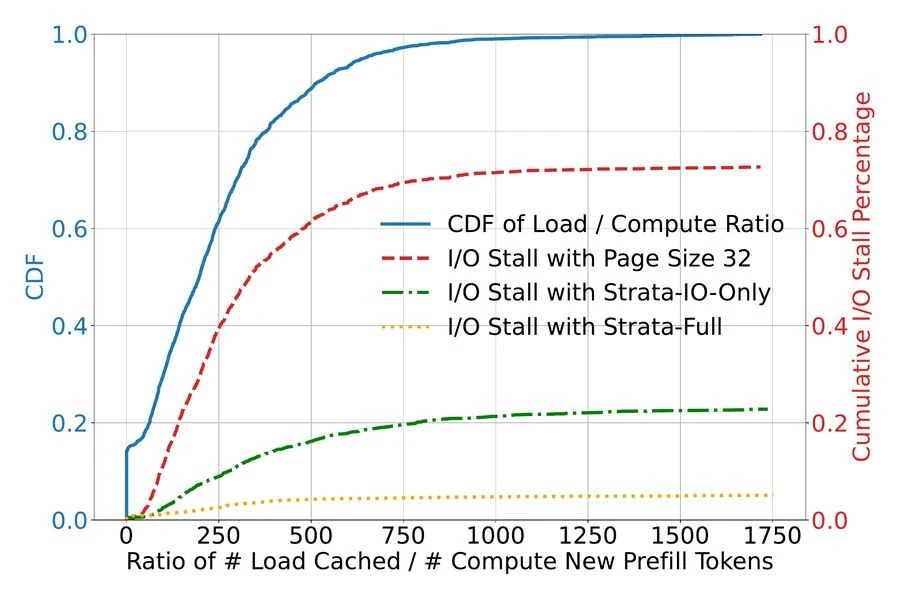
图（原文 Figure 1）：横轴为每批的 Load/Compute Ratio（从 CPU 加载的 token 数 / 新输入 token 数），左轴为 CDF、右轴为 I/O stall 占 prefill 时间的百分比。红色曲线（基线 SGLang offload）显示 I/O stall 占比可超过 74%，绿色曲线（Strata 优化 I/O 后）即使移除小页传输开销，仍有高达 24% prefill 时间阻塞在 cache 加载——说明调度器已把 I/O 优化后仍可能无法完全隐藏加载延迟，是第二类瓶颈的征兆[C7, N2]。
引导句：图 3 给出多平台实测带宽利用率。
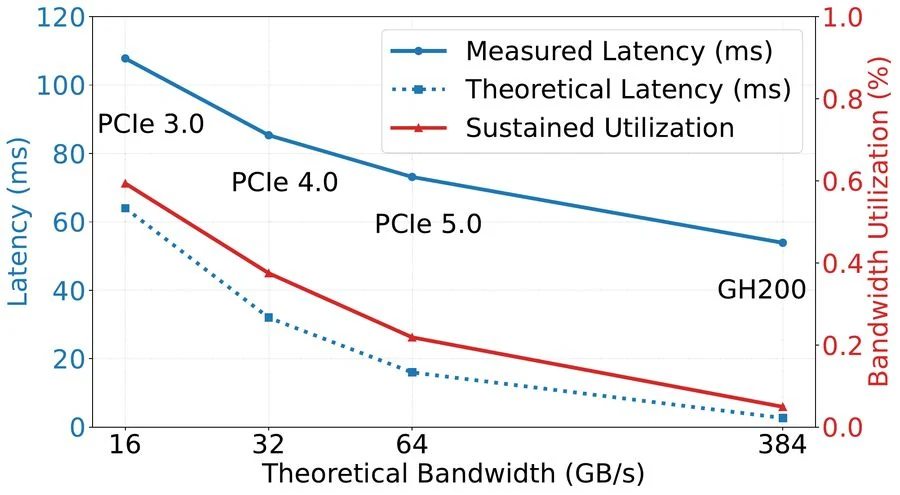
图（原文 Figure 3）：8192 token KV cache（页 32、Llama-3.1-8B）从 CPU 加载到 GPU 在不同平台上的延迟与带宽利用率。H200（PCIe 5.0）约 22%，带宽更高的 GH200（NVLink，峰值 6 倍于 PCIe）反而跌至约 5%[C8, N3]。同样的小传输布局、更高带宽的硬件，相对利用率反而更低。
直觉上的"修"是放大页大小：单次传输变大、$S$ 变大、利用率上升。但放大页同时改了三个目标的方向，而且两个反向。
看图 2 的实验。ShareGPT、Mistral-24B、H200、SGLang 上把页大小从 1 扫到 1024：
引导句：图 2 显示页大小对缓存命中率与 TTFT 的影响——页越大命中率越低，TTFT 上升最多 2 倍（P90 2.9 倍）。
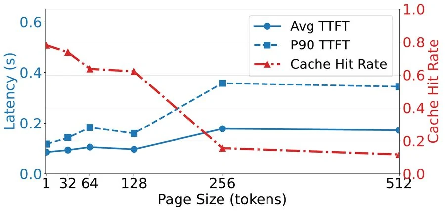
图（原文 Figure 2）：页大小从 1 增至 1024 时，缓存命中率随页增大显著下降，平均 TTFT 最多上升 2 倍、P90 上升 2.9 倍[C6, N4]。原因是按页匹配（PagedAttention）：共享前缀不是页大小整数倍时，末尾不足一页的 token 全部落空（页面尾部对齐损失是按页匹配机制的直接推论，标注为推断：论文 §3.1 L39–42 仅指出"cache matching is performed on a per-page basis"是命中率下降原因，未展开尾部对齐的具体量化）；页越大、按页匹配的粒度越粗，命中率越低。
两边一起看：页大改善传输但伤缓存，页小改善缓存但伤传输。没有兼顾两者的办法——这是设计空间的本质。
第一类瓶颈出在 I/O 路径上，把单次传输的带宽用起来了，能否藏住？现有调度器一般按"FIFO + 组批到满"运行，假设 prefill 的新 token 计算量足以掩盖 cache miss 的加载时间[C4]。SGLang/vLLM/TensorRT-LLM 都不例外。这个假设在短上下文下成立（prefill 计算量大、加载量小），但长上下文反过来：需要加载的 KV cache（按 F3 公式，每 token 字节数 $\times$ token 数）远大于新增的少量 token prefill 计算。加载时间反超计算，系统进入 loading-bound。
图 1 的 24% 即是优化 I/O 后仍存在的 stall——剩下来这部分无法靠传输加速解决，必须靠调度：让 batch 在加载与计算间取得平衡、把不可避免的等待与有用计算重叠起来。
第二个调度问题是delay hit[C7]：多个请求在同一上下文缓存 miss 尚未解决期间到达，编入同一批则各自做一次 prefill，但缓存的 miss 只需要被解析一次——后到的请求浪费了 prefill。异步调度器（提前准备下一批）把 miss 解析窗口拉长到整批执行时间，加剧此现象。这是分层缓存后命中率虽高（实测约 95%[C19]）但"缓存还没准备好"的请求也能命中瞬时不到位的缓存的来源。
这两类瓶颈分别由 GPU-assisted I/O（I/O 路径，第 2 章）与 cache-aware 调度（控制面，第 4 章）回应——但统一在第 1 章给出的"长上下文$\to$loading-bound"的图景之下。
为什么长上下文的 KV cache 必须分层存储？不分层会怎样？
Llama-3.1-8B 下 20,000 token 手册缓存约 2.56 GB，已经占 40 GB HBM 的 6.4%。当多个客服同时服务各自的 20K token 文档（如产品手册、技术支持手册等多份文档同时在缓存），加上多轮对话累积的缓存，几十份就耗尽。论文 LooGLE 实验验证：非分层系统"迅速耗尽 GPU 显存容量、导致 prefill 频繁 miss、反复重算、低吞吐高延迟"[C19]。分层到 CPU/SSD/远端内存池是必要的容量扩展。
Little's Law 怎么解释小传输打不满带宽？
稳定状态下 $X=C\cdot S/L$，三个杠杆：并发 $C$、每次传输大小 $S$、每次延迟 $L$。CPU-GPU 场景下 $C$ 受 CPU 侧并行度与驱动队列限制、$L$ 由硬件决定，Strata 之前的杠杆只剩 $S$——但分页布局让 $S$ 只有几 KB 到几 MB，远低于打满 PCIe 5.0 所需的 1–2 MB 阈值。实测 8192 token 加载仅约 22% 利用率、GH200 上约 5%，带宽越高相对比例越低。
为什么放大页大小同时损伤缓存命中率？
页越大、单页覆盖的 token 越多，但缓存匹配按整页计：两请求共享 100 token 时，页 32 命中 3 页共 96 token，剩余 4 token 落空；页 256 一页都不满、命中归零。ShareGPT + Mistral-24B 实验：页 1$\to$1024，命中率显著下降、平均 TTFT 最多 2 倍、P90 2.9 倍。页大小是"传输效率 vs 缓存粒度"的本质权衡，无法在分页机制内消除——Strata 的回应是把传输效率从权衡中拿出来，让页大小只为缓存粒度服务。
delay hit 是怎么发生的？为什么异步调度器加剧它？
同一上下文的 cache miss 解析需要时间（prefill 或跨层加载）；在这段时间内到达的后续请求若被编入同一批，都会各自做一遍 prefill——后到的请求浪费了 prefill（实际上后续请求到来时缓存可能已就绪，但已被先做的请求抢了任务）。异步调度器（提前准备下一批）把 miss 解析窗口从"到达批的执行时间"拉长到"整批执行时间"，让更多后到请求落入此窗口。Strata 的 transient node 机制（见第 4 章）专门处理这一情形。
第 1 章把矛盾定位在三杠杆 $X=C\cdot S/L$ 中只有 $S$ 可调却被分页布局锁死。Strata 在数据面提出一个反直觉的杠杆：把 $C$ 拿来调——不再让 CPU 端的并发去驱动 I/O，而是用 GPU 自己的数千线程搬数据。本章讲机制、代价与控制。
cudaMemcpyAsync 是经典做法：发起一次 DMA 传输，等完成。它的并发 $C$ 受 CPU 侧并行度与驱动/硬件队列容量限制[C5]——典型 GPU 应用中只能同时跑几十个异步拷贝，瓶颈在 CPU 与驱动。
GPU-assisted I/O 跳过 cudaMemcpyAsync，启动一个 CUDA kernel：数千线程各从源（GPU 显存或 CPU 注册的 pinned memory）读一小块到寄存器，再写到目的（GPU 显存或 CPU pinned memory）[C8]。源与目的都可在 GPU/CPU 之间——内核本身就是"传输"。这个机制的三条收益针对第 1 章的全部痛点：
三条合起来：原本 $C$ 受限（数十）、$S$ 受限（KB 级），变为 $C$ 充裕（数千）、$S$ 可小（128 字节粒度），$X$ 可显著上升而不必动页大小。
新机制不无代价：I/O kernel 与计算 kernel 抢 GPU 资源（寄存器、执行周期、cache）[C10]；GPU 硬件调度器在管理这种细粒度 I/O 与粗粒度计算的混合时常常表现欠佳[C10]。Strata 的对策是诱使硬件调度器把 I/O 限制在少数 SM 上，避开对计算 kernel 的影响。
具体做法：少量大 CUDA block。把 I/O kernel 设计成 2 个 CUDA block、每个 1024 线程[C10, N5]。少 block 让硬件调度器把它们装进同一两个 SM（可低至 1 个），剩下的一百多个 SM 留给计算 kernel。再配合绕过 cache 的底层指令（cache-bypass loads/stores）减少 cache 污染。
看图 5 的微基准（H200 上 I/O kernel 与 prefill/decode 同跑）：
引导句：图 5 显示资源配额对 I/O kernel 干扰的影响——2 个 1024 线程 block 是兼顾吞吐与干扰的甜点。
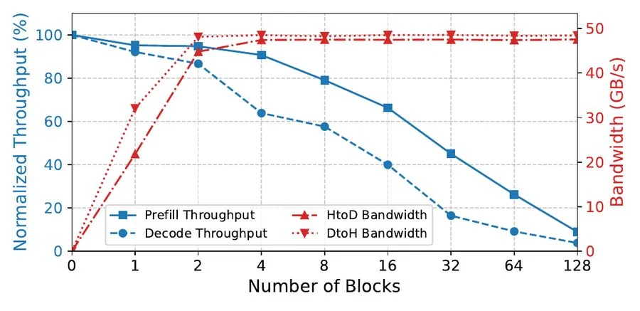
图（原文 Figure 5）：横轴是 I/O kernel 占用的 CUDA block 数与每 block 线程数，纵轴是同跑场景下的吞吐（数据传输、prefill、decode）与互相干扰百分比。仅用 2 个 1024 线程 block 时，Strata 达到约 50 GB/s 传输吞吐、prefill 性能损失 <5%、decode 损失约 10%[N5]。这一组数字决定了默认配额：CPU$\to$GPU 加载用 2 block（关键路径），GPU$\to$CPU 备份用 1 block（非关键路径，备份带宽本就够用）。
端到端确认该配置对整体性能影响 <5%[N5]，意味着 I/O kernel 进入了"高吞吐 + 几乎零代价"的安全区。ROCm 后端下 kernel 实现兼容 AMD GPU（论文 §4.2 提及，无对应实验数据）[C26]。
GPU 硬件调度器按 CUDA block 为单位把 block 分配到 SM（详见 GPU 执行模型 第 2 章）：SM 上一个 block 一旦占据不会主动让位，少量 block 意味着少量 SM 会被占用。但单 block 内的 1024 个线程可以填满单个 SM 的所有 warp 与寄存器。block 太大不行（每个 SM 同时能跑的 block 数有限），太小也不行（不够填满 SM 导致利用率低）。所以"少 block + 大 thread per block"是兼顾的甜点——硬件调度器把 block 调度到尽可能少的 SM，I/O 的资源占用就被局限在这一两个 SM 上。
GPU-assisted I/O 的三个优点对应第 1 章哪些瓶颈？
第 1 章指出 $C$ 受 CPU 端限制、$S$ 受分页布局限制是打不满带宽的两条根因。GPU-assisted I/O 用数千 GPU 线程把 $C$ 从数十提到数千、128 字节粒度让 $S$ 不再受分页束缚，三者合力把 $X$ 推高。布局灵活这一条对应一个独立的优化空间——分层存储的两端布局选择不同（GPU 与 host），第 3 章展开。
为什么 Strata 默认用 2 个 1024 线程 block？这数字与硬件能力的关系是什么？
把 I/O kernel 设计成 2 个 block、每 block 1024 线程：少量 block 占用少量 SM（其余 SM 给计算 kernel），1024 线程足以填满单个 SM 的 warp 与寄存器。微基准显示这一组数字给出约 50 GB/s 吞吐、prefill 损失 <5%、decode 损失 10%，端到端整体影响 <5%——是兼顾 I/O 效率与干扰的甜点。CPU$\to$GPU 加载（关键路径）用 2 block、GPU$\to$CPU 备份（非关键路径）用 1 block。
GPU-assisted I/O 的第三个优点是"布局灵活"——内核内做一次轻量算术几乎免费。这让分层存储的两端可以各自选对各自最优的内存布局，不必再为另一端妥协。
看图 6 对比 layer-first 与 page-first 两种布局。
引导句：图 6 显示 layer-first（GPU 计算友好）与 page-first（传输友好）布局的差别。
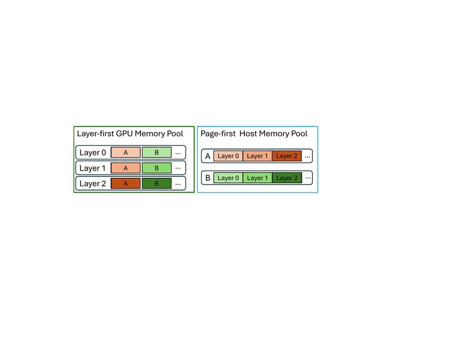
图（原文 Figure 6）：layer-first（左）将同一层各 token 的 K/V 连续排列，与逐层计算对齐——kernel 从一段连续内存即可完成该层注意力。page-first（右）将同一页的各层连续排列，单页成为一次大传输——搬运粒度大、传输高效，但用于 GPU 计算时需要一层间接寻址（先查页表再定位各层数据），kernel 实现复杂化。
两端的天然选择：GPU 偏好 layer-first（与逐层计算一致，kernel 简单高效）；host 内存与外部存储偏好 page-first（一次大块传输）。但二者并不兼容——同一份数据在两种布局下字节顺序不同。把哪一端放在另一边，都会损失计算效率或传输效率。
GPU-assisted I/O 给出一条出路：I/O 线程读源数据时，对偏移多做一次算术运算即可算出目的地址——把"读旧布局 $\to$ 写新布局"内嵌在 I/O 流程里，开销可忽略[C11]。结果：GPU 保留 layer-first（不破坏计算），host/存储用 page-first（不损失传输），I/O 时做一次布局转换。
看图 12 的微基准：同样页 32、8192 token，从本地磁盘加载到 CPU 内存时，page-first 布局的延迟最多降低 4 倍（vs layer-first）[C11, N9]。这是布局解耦在存储层的具体收益。
引导句：图 12 给出磁盘加载下 page-first 与 layer-first 布局的延迟对比。
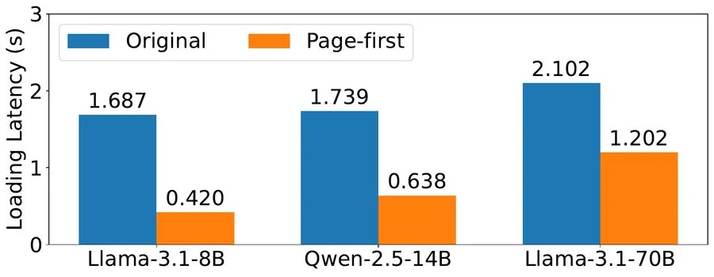
图（原文 Figure 12）：8192 token KV cache（页 32、不同模型）从本地磁盘加载到 CPU 内存时，page-first 布局的延迟显著低于 layer-first，最多 4 倍[N9]。
构造示例（不依赖真实模型）。一个 2 层 4 token 的微型 KV cache，每 token 每层有 K 与 V 各一份：layer-first 下字节序列是 $\text{layer}_0\text{ token}_0 K/V, \text{layer}_0\text{ token}_1 K/V, \text{layer}_0\text{ token}_2 K/V, \text{layer}_0\text{ token}_3 K/V, \text{layer}_1 \ldots$；page-first（页大小 4）下字节序列是 $\text{page}_0 \text{ token}_0 K/V \text{ layer}_0, \text{token}_0 K/V \text{ layer}_1, \text{token}_1 K/V \text{ layer}_0, \text{token}_1 K/V \text{ layer}_1, \ldots$。从磁盘加载"第 0 个 token 全部数据"：layer-first 下页首位置与 token 0 的 layer 0 K/V 重合，1 次大读可取齐；page-first 下页首位置仍如此，但页内连续排也使 1 次大读可取齐——差异在中段访问模式。差异真正显现于"搬整页：layer-first 一次只取到一页某一层，page-first 一次取到整页所有层"。这就是图 12 的延迟差异来源。本例的关键观察：page-first 与 layer-first 在 GPU 计算侧的间接寻址代价是常数级别（每页页表多一次寻址），与数据量无关；传输侧的收益则随数据量放大。
外部存储（SSD）参与时，缓存控制器在检测到存储层命中后，机会性预取到 host 内存——预取的延迟与请求排队延迟重叠[C12]。一旦请求被发往执行，控制器终止在途预取、利用已在 host/GPU 的数据。这是 best-effort 策略：存储层延迟显著高于 host-GPU 之间，最坏情况下（请求到达时数据仍在路上）预取还未完成；好处是大量请求能借助预取避免完全从磁盘加载。论文未把 disk 纳入端到端对比（基线系统对 disk 支持有限）[N19]，本节是机制描述而非实验支撑。
为什么 GPU 偏好 layer-first、host 偏好 page-first？
Transformer 逐层进行（前一层的输出是后一层的输入），layer-first 下同一层各 token 的 K/V 连续，kernel 从一段连续内存即可完成该层注意力。page-first 把一页内各层连续排，单次大块传输就能搬走一页，但用于 GPU 计算时需要一层间接寻址（先查页表再按层定位），kernel 实现复杂化。两端的需求天然冲突。
为什么 I/O kernel 内做一次地址算术就能在途转换布局？
搬运的本质是"读源 $\to$ 写目的"。layer-first 与 page-first 的差别只在数据元素的相对位置——同一份数据在两种布局下的字节偏移可由简单算术公式互相换算。I/O 线程在写目的前对源偏移做一次重映射就得到目的地址，无需临时缓冲。这一加法级开销在 GPU 线程内可忽略（与一次访存比），却把两端的布局选择权完全解耦。
第 2、3 章解决了"搬得快"，但"搬的同时 GPU 不闲着、不重复搬"是控制面的问题。本章先给系统全景，再依次讲三阶段调度策略：delay hit 延迟执行、均衡 batch、bubble filling。
看图 4 的架构图。
引导句：图 4 展示 Strata 的数据流——请求$\to$Scheduler$\to$GPU Executor + Cache Controller（GPU HBM / CPU DRAM / External Storage），HiRadixTree 作为页表与元数据。
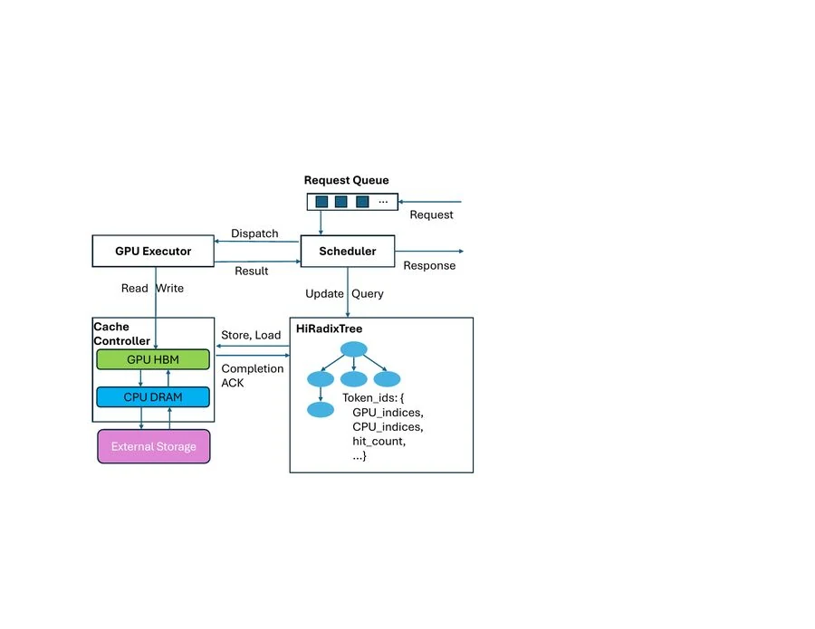
图（原文 Figure 4）：请求进入 Request Queue。Scheduler 在当前批执行期间持续估算可用系统资源与队列请求的资源需求，选子集组成下一批并 Dispatch 到 GPU Executor，同时向 Cache Controller 发起 KV cache 加载请求（Store / Load）。GPU Executor 与 Cache Controller 同步（Completion ACK），确保执行到某层时该层 KV cache 已就绪。Cache Controller 管理 GPU HBM、CPU DRAM、External Storage 三层之间的数据流。HiRadixTree 是 SGLang RadixTree 的扩展，存各页元数据（GPU 索引、CPU 索引、hit 计数等）。prefill 完成后经 continuous batching 合并进统一 decoding batch，Scheduler 沿用 SGLang 的 prefill 优先（缩 TTFT）+ decode 合大批（提吞吐）实践。Strata 用 P-D co-location：同一 GPU 时间上交替执行 prefill 与 decode 批[C17, C18]。
Scheduler 与 Cache Controller 的边界是清楚的：Cache Controller 负责数据面（数据在内存层级之间怎么搬、布局怎么转、页表怎么维护）；Scheduler 负责控制面（什么时候把哪些请求编入下一批、组批怎么配平、什么时候插 decode）。两者通过 KV cache 加载请求与就绪 ACK 协调。
delay hit 在第 1 章已点出现象（多个请求在同一上下文 miss 解析期间到达并排队）。Scheduler 用 HiRadixTree + transient node 缓解。
transient node 是 HiRadixTree 的特殊节点：与标准节点一样用 token ID 作遍历键，但不指向具体内存索引（不是已就绪的缓存），而是带一个标记——in-queue 表示有请求正引用这段新上下文（请求在队列里、缓存尚未算完）、in-flight 表示对应 token 的 cache 正在计算[C14]。Scheduler 沿队列扫一遍，匹配到 transient node 的请求做两件事：① 推迟到下一轮调度（不参与本轮 batch），② 置于等待队列队首——因为即将完成的 cache 在队首可最快被复用、对 TTFT 影响最小[C14]。请求转入执行时，对应 transient node 改为 in-flight；prefill 完成后转标准节点（带内存索引）。
阈值机制：只有匹配 token 数超过默认阈值 100 才推迟[C14, N7]——少量 token 的共享不值得推迟（推迟本身有调度开销且会让该请求的 TTFT 后移）。
引导句：图 7 把 FIFO 与 Strata 的调度时间线放在同一坐标轴：FIFO 行为在上行，Strata 行为在下行，每段按颜色标识 miss/device hit/host hit/transfer/decoding，蓝色箭头标注三策略对应位置。
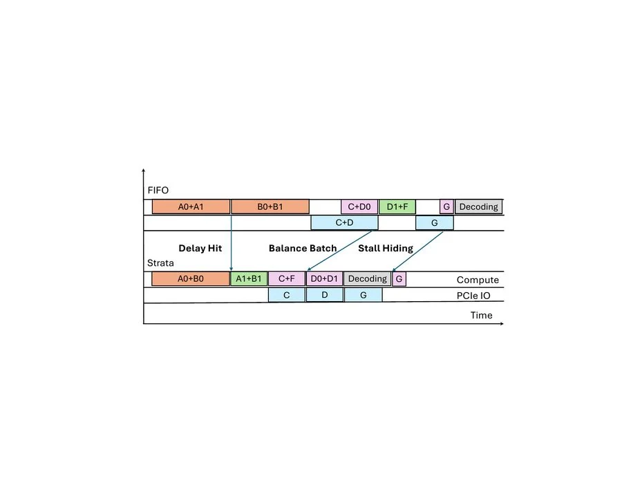
图（原文 Figure 7）：橙色块=prefill 批含 cache miss、绿色块=device hit（GPU 显存命中）、紫色块=host hit（CPU 内存命中）、蓝色块=data transfer、灰色块=decoding batch。FIFO 行 A0+A1、B0+B1、C+D0、D1+F、G、Decoding；Strata 行 A0+B0、A1+B1、C+F、D0+D1、Decoding、G。三策略分别由三处蓝色箭头标注（图中标注）[C14, C15, C16]。
看图 7（FIFO vs Strata）的对比，FIFO 行 A0+A1（两个请求都 miss 同一段），Strata 把 A0+A1 拆成 A0+B0 与 A1+B1：B0/B1 与 A0/A1 共享不同段 cache miss，能避免同批 miss 的重复 prefill——这就是 delay hit 缓解[C14]。
默认 LLM serving 引擎按 FIFO 组批到满（token 上限或显存上限）[C15]。这种组批对短上下文合适（prefill 计算量足够掩盖加载），对长上下文不合适（加载时间长）。Strata 在组批时检查每加入一个请求是否使批 loading-bound——即聚合 load/compute 比例（阈值默认 100，对应图 1 中 stall 开始出现的点[N8]）。
具体策略（Algorithm 1）[C15]：从队首请求开始组批，每步检查加入请求后是否仍非 loading-bound：① 不 bound 则加入，并优先吸收与其 bundle hit 的请求（共享上下文的请求放在同一批，共享加载且省显存与片上带宽——与 delay hit 相对）；② bound 则进降级列表，批不满再从降级列表补充；③ 防饿死：每轮组批总从队首开始、降级请求保留原序。
看图 7 的 Balance Batch 标注：C+D0 在 FIFO 中是 bound（C 的 load + D0 的 load 都进预填），Strata 改成 C+F（F 与 C 的 cache hit 比 D0 多）以平衡——同样完成预填但计算负载更重，掩盖加载。
输入：请求队列 Q；当前正在构建的批 B 起始为空
状态：降级列表 D ← []
函数 AddBundleHit(Q, B)：
遍历 Q 中每个请求 r：
若 B.is_bundle_hit(r)：B.add(r)；Q ← Q - r
函数 BatchFormation(Q)：
B.add(Q.pop(0)) # 每轮从队首开始
AddBundleHit(Q, B)
while |Q| > 0 且 B 未满：
r ← Q.pop(0)
若 B.loading_bound(r)： # load/compute 比例超阈值 100
D.append(r) # 不加入批
否则：
B.add(r)
AddBundleHit(Q, B) # 优先吸收 bundle hit
for r in D：
若 B 满：break
B.add(r) # 批不满再补充降级请求
return B
核心机制：
- loading_bound 阈值：硬件/模型相关，可分别 profiling
- bundle hit：共享上下文的请求编入同一批
- 防饿死：降级请求保留原序；每轮从队首开始
- 防饿死与 bundle hit 的平衡：AddBundleHit 内层循环只在组批请求通过
loading_bound 检查后才执行三阶段策略的最后一层。均衡 batch 后仍有批 loading-bound 时（高请求率下必然出现），Scheduler 推迟 prefill 计算、向模型执行器发 decode batch 与上下文加载并行[C16]。
为什么 decode 与加载不冲突？两个操作的资源占用几乎正交：decode 注意力读全部缓存（饱和 HBM 带宽），加载数据从 host 经 PCIe 到 GPU（饱和 PCIe 带宽）[C16]。把 decode 批放在 loading 的等待窗口里，GPU 不空转、加载不间断。
论文提到也可插入 prefill 批来填充空泡——这适用于 P-D 分离部署（论文未实验）[C16]。本文讨论的 P-D co-location 下，decode 是最安全的填空选项。
看图 7 的 Stall Hiding 标注：G 单独一请求的加载（下方 PCIe IO 行的 G 块）期间，Strata 在上方插入 Decoding 批——G PCIe 加载与 Decoding 并行进行。
transient node 解决的是哪类 delay hit？为什么阈值是 100？
同一上下文 cache miss 解析需要时间，这段时间内到达的后续请求若被编入同批会各自做一遍 prefill——后到者浪费。transient node 标记"正在计算中"的前缀，把匹配到该前缀的后续请求推迟一轮（不参与本轮批）并置于队首（最快复用机会），prefill 完成转 standard 后下一轮直接复用。阈值 100 是匹配 token 数的过滤：少量 token（<100）的共享不值得推迟（推迟本身有调度开销且让该请求的 TTFT 后移），阈值之上才推迟。默认值 100 是论文实证有效的设定，可调。
bundle hit 与 delay hit 有什么区别？
bundle hit：编入同批的请求恰好共享上下文，前批做完加载的本批可直接复用——省显存（一份缓存多处引用）、省片上带宽（不走冗余路径）。delay hit：编入同批的请求对同一未就绪的 cache 各自做 prefill——浪费算力（前批解析即可复用）。Strata 的组批策略在 AddBundleHit 内层循环中"先吸收 bundle hit 再继续组批"，让 bundle hit 自然形成；transient node 防止后到的请求被编入含 miss 的批，从而切断 delay hit 的形成路径。
bubble filling 中 decode 为什么不与加载冲突？
decode 每步读全部缓存做注意力（饱和 HBM 带宽），KV cache 加载数据从 host 经 PCIe 到 GPU（饱和 PCIe 带宽）。两条不同总线上的传输彼此独立，GPU 不需要为另一操作让位。GPU 的算力（SM）也基本不冲突：I/O kernel 已被关进 2 个 SM（2 block + 1024 thread，详见第 2 章），剩下一百多个 SM 可用于 decode。decode 填进 loading 的空泡里，GPU 不空转、加载不间断，整体资源利用率接近全量。
本章报全量端数据。先讲清实验设置（否则数字难解释），再分四组：① 端到端全套数字（含 abstract 5x/3.75x 的来源）② 消融各机制贡献 ③ 页大小负担与 cache distance ④ GH200 新硬件。短上下文（ShareGPT）单列。
平台[N16]：H200 节点（8$\times$H200 GPU 互联、Intel Sapphire Rapids CPU、1.6TB DRAM、每 GPU PCIe 5.0 x16 上行 64 GB/s）；GH200 节点（单颗 H100+Grace 64 核 ARM、464GB LPDDR5X、384 GB/s 上行）。
模型[N18]：Llama-3.1-8B-Instruct（128K 上下文）、Qwen2.5-14B-Instruct-1M（1M 上下文）、Llama-3.1-70B-Instruct（128K 上下文，4 GPU 张量并行）。8B 与 14B 单 GPU。
基线与配置[N17]：vLLM v0.8.5 + LMCache v0.2.1（LMCache chunk 256、vLLM 页 32）；TensorRT-LLM v0.17.0（页 32）；SGLang v0.4.5 + 作者自建 SGLang-HiCache（layer-wise 重叠 + cudaMemcpyAsync，页 32，对齐 CachedAttention/Pensieve/FlashGen 做法——注意非 SGLang 社区版 HiCache）；Strata 与 SGLang 自身页 1。
数据集[N19]：LooGLE（avg 输入 21,613 / 输出 15.60 token，105 上下文、2410 查询，Wikipedia 部分）；NarrativeQA（avg 输入 54,797 / 输出 13.00，过滤超 128K 后取 50 文档、1461 查询）；ReviewMT（avg 输入 17,708 / 输出 208.3，100 上下文、1092 查询，多智能体评审对话）；ShareGPT（avg 输入 680.9 / 输出 260.9，200,869 查询）。到达用 Poisson 模拟，对话数据集保留轮次依赖（ShareGPT 插 60 秒"思考时间"，沿 Pensieve 做法）。在途查询上限 128。ShareGPT 限 GPU 显存约 500K token 以凸显分层缓存行为。CPU pinned 内存 1TB（GH200 400GB）。Disk 未纳入端到端（基线支持有限）。
看图 8 全景（H200）：
引导句：图 8 给出 H200 上三模型四数据集的吞吐-TTFT 全景。曲线越靠右上越好——同 TTFT 下吞吐更高，或同吞吐下 TTFT 更低。
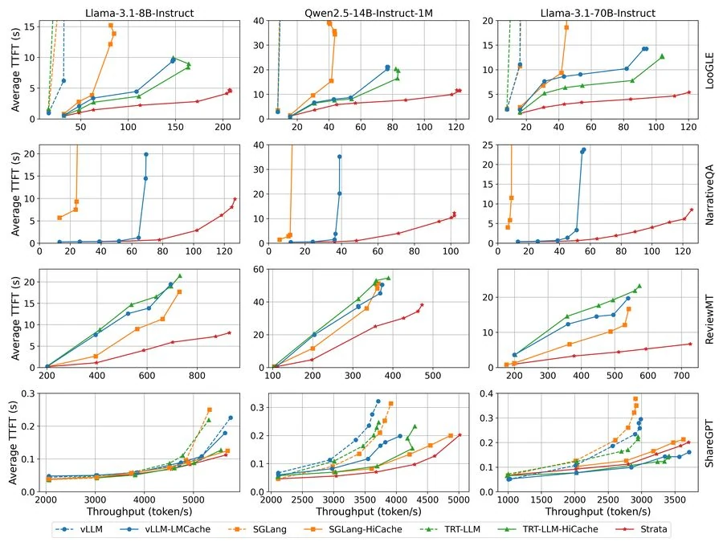
图（原文 Figure 8）：每行一个数据集，纵轴 Average TTFT (s)、横轴 Throughput (output tokens/s)，曲线终点由请求率驱动。曲线越靠右下越好——同 TTFT 下吞吐更高，或同吞吐下 TTFT 更低。Strata 在所有长上下文（前三行）上显著领先 short context（ShareGPT，末行）上各系统接近。LooGLE 上 Strata 对 Llama-70B 达到 abstract 的 5x vs vLLM-LMCache 与 3.75x vs TensorRT-LLM（详见下表）。
核心数字表（汇总 N10、N11、N20）：
| 数据集 | 模型 | vs SGLang-HiCache | vs vLLM-LMCache | vs TensorRT-HiCache |
|---|---|---|---|---|
| LooGLE | Llama-8B | 3.2x | 2.6x | 1.9x |
| LooGLE | Qwen-14B | 3.9x | 2.1x | 1.9x |
| LooGLE | Llama-70B | 5x | 5x | 3.75x |
| ReviewMT | Llama-8B | 1.7x | 2.3x | 2.3x |
| NarrativeQA（预热稳态） | Llama-8B / Qwen-14B / Llama-70B | — | 2.3x / 2.6x / 2.5x | — |
abstract 的"up to $5\times$ lower TTFT vs vLLM+LMCache"与"$3.75\times$ speedup over TensorRT-LLM"对应 Llama-70B LooGLE 行：同 TTFT 下 Strata 吞吐提升 5x（vs vLLM-LMCache 与 vs SGLang-HiCache 均 5x）、vs TensorRT-HiCache 提升 3.75x[N10]。两者口径略异：abstract 说"lower TTFT"、正文说"higher throughput at the same TTFT"，出自同一组实验的不同读法（吞吐-延迟曲线上的同位点），并非冲突。
分层缓存的必要性：LooGLE 上非分层系统"迅速耗尽 GPU 显存容量、导致 prefill 频繁 miss、反复重算、低吞吐高延迟"，分层系统借 CPU 内存稳定达到约 95% cache hit rate[C19, N20]。换言之，没有 1TB pinned DRAM 配置（GH200 400GB）的容量基础，Strata 的传输与调度优化无从谈起。
NarrativeQA 预热稳态：先预计算全部上下文 KV 缓存入 CPU 内存、刷 GPU 初始状态后重启负载（TensorRT-HiCache 不支持预热未测）。NarrativeQA 因 avg 输入 54,797 token 远超 LooGLE，"无分层缓存系统跑不动"——这就是该实验以预热稳态为主的原因。对比 vLLM-LMCache：Llama-8B 2.3x、Qwen-14B 2.6x、Llama-70B 2.5x[N11]。
NarrativeQA 预热的目的是隔离稳态：先把所有上下文 KV 预计算并放进 CPU 内存，然后启动负载，让"GPU 上无缓存、全靠 CPU 命中"成为常态；这样测出的是稳态下传输与调度的能力，排除缓存刚启动时命中率逐渐爬升的混淆。ShareGPT 的"60 秒思考时间"是模拟用户在 LLM 回复到下一轮请求之间的等待——长上下文中这一等待显著影响 cache 的生命周期（短上下文里可能比回复本身短），插 60 秒是对 Pensieve 方法的沿用。所有基准在途查询上限 128，ShareGPT 限 GPU 显存 500K token 以凸显分层缓存行为（否则所有请求可能都在 GPU 上命中）。
在 Qwen-14B、H200、LooGLE 上加三个变体：Strata-IO（仅 GPU-assisted I/O，I/O 机制）、Strata-Schedule-Only（仅三阶段调度）、Strata-IO-LPM（GPU-assisted I/O + 最长前缀匹配调度）[C20]。结果见图 9。
引导句：图 9 显示 Strata-IO、Strata-Schedule-Only、Strata-IO-LPM 与完整 Strata 的吞吐-TTFT 曲线对比——各机制独立有效，组合更优。
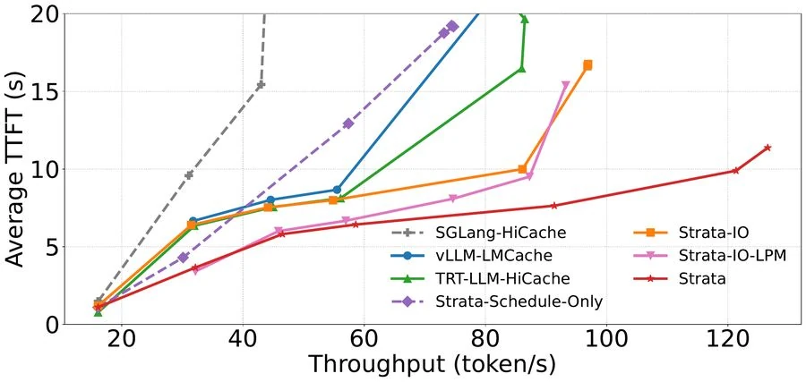
图（原文 Figure 9）：相对 SGLang-HiCache 基线，Strata-IO 与 Strata-Schedule-Only 分别最高 2.3x 与 1.8x 峰值吞吐[N12, C20]。两者各从一个角度缓解 loading stall：低请求率下调度收益大（批小、I/O 压力轻，调度可更有效掩盖加载）；高请求率下 I/O 主导（批大、加载量大，I/O 机制是维持高吞吐的关键）。vLLM-LMCache 与 TensorRT-HiCache 也用 CUDA kernel 加速 KV cache I/O，与 Strata-IO 低请求率下相当，高请求率下 Strata-IO 维持更高吞吐（干扰抑制更有效）。Strata-IO-LPM（最长前缀匹配调度）低请求率下因提高在设备页复用而获益，高请求率下因频繁逐出无法保持。
页大小实验：SGLang-HiCache 在不同页大小下与 Strata-IO 比较峰值吞吐（归一化为 Strata-IO）。
引导句：图 10 显示 SGLang-HiCache 在不同页大小下的峰值吞吐（相对 Strata-IO 归一化）——即便调到自身最优页 512 也只能达到 93%，且命中率低 2.4%。
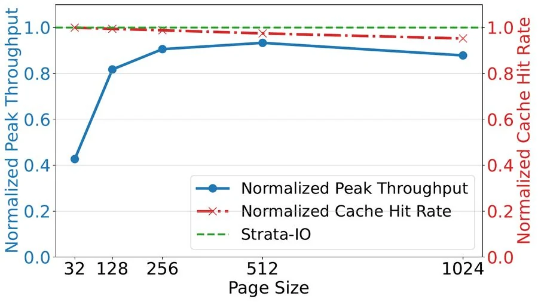
图（原文 Figure 10）：SGLang-HiCache 的峰值吞吐随页大小先升后降：页小 $\to$ I/O stall 多、吞吐低；页大 $\to$ hit rate 下降、吞吐也低。最优页 512 达到 Strata-IO 的 93%，主因命中率低 2.4%[N13, C21]（论文未明说 2.4% 相对哪个具体对照配置，数字本身见 §5.3.2）。Strata-IO 的 GPU-assisted I/O 让 I/O 效率对页大小不敏感，传输约束被摘出权衡。
cache distance 实验：同上下文请求在到达流中的分布影响各机制收益。三种工作负载：最小距离（同上下文请求连续到达）、shuffle（原 LooGLE）、最大距离（同上下文请求尽量分散）[C22]。
引导句：图 11 展示三种 cache distance 下各机制的贡献分解。
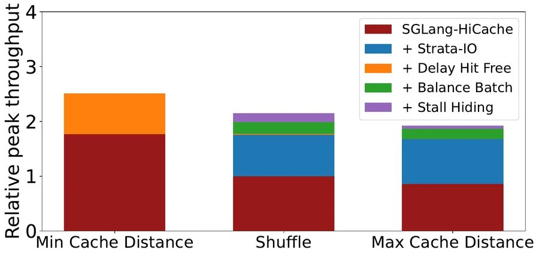
图（原文 Figure 11）：最小距离时无需分层缓存（高局部性），delay hit 缓解贡献最大（峰值吞吐 +42%）；shuffle 与最大距离时 I/O 机制分别 +76% 与 +95%（距离越大命中 CPU DRAM 越多，I/O 优化空间越大）；均衡 batch 再 +11% 与 +12%；stall hiding 再 +8% 与 +3%（shuffle 方差大、stall hiding 收益更高）。最大距离时 delay hit 缓解无收益（高距离天然减少 delay hit 现象的发生）[N14, C22]。
GH200 把 PCIe 换成 NVLink-C2C，CPU-GPU 带宽从 64 GB/s 跃升到 384 GB/s（6 倍）。问题：仅靠硬件升级能否吃满？
引导句：图 13 显示 GH200 上各系统的 TTFT 相对 H200 基线的对比。
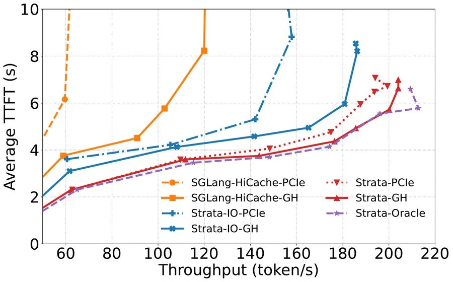
图（原文 Figure 13）：标准 DMA 拷贝不加大页时无法有效利用硬件改进；仅靠硬件升级（GH200 上的 SGLang 基线）延迟下降有限，且不敌 H200 上的 Strata-IO。
引导句：图 14 给出持续带宽对比。
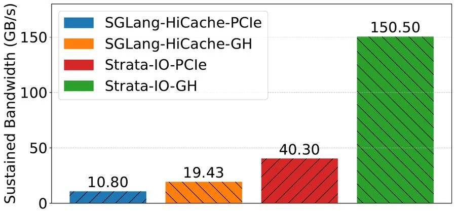
图（原文 Figure 14）：Strata-IO 把持续带宽从 40 提到 150 GB/s；但 Strata-IO-GH（仅 I/O 机制，无调度）仍不敌 Strata-PCIe（完整版，H200 平台）——调度改进是吃满 Grace Hopper 类平台的必要条件。完整 Strata-GH 接近 Oracle（无限带宽模拟）性能[C23, N15]。
ShareGPT（avg 输入 680.9 token）上各系统接近：底层 SGLang 引擎本身在 Llama-8B/70B 上因 kernel 差异较 vLLM/TensorRT-LLM 略弱，Strata 沿用 SGLang 引擎未消除这一差距。整体上"短上下文上 Strata 与其他 SOTA 系统性能相当"——长上下文优化不以短上下文为代价[C24]。
abstract 说"5x lower TTFT vs vLLM+LMCache、3.75x vs TensorRT-LLM"是怎么读出来的？
LooGLE 是 prefill 主导、avg 输入 21,613 token 的长上下文负载；Llama-70B 用 4 GPU 张量并行（KV cache 总量更大，跨内存层搬运规模更大）；Strata 在吞吐-TTFT 曲线上同 TTFT 下吞吐提升倍数：vs SGLang-HiCache 与 vs vLLM-LMCache 各 5x、vs TensorRT-HiCache 3.75x。abstract 取最大数字（5x 与 3.75x），正文表格完整列出全部基线 $\times$ 模型 $\times$ 数据集组合。
为什么 SGLang-HiCache 把页调到最优的 512 也只能达到 Strata-IO 的 93%？
页 512 的 I/O 传输单元大（更接近打满 PCIe 的 1–2 MB），但 SGLang-HiCache@512 的 cache 命中率比 Strata-IO 低 2.4%（按页匹配的尾部落空变大；2.4% 与 93% 同出自 §5.3.2 L154）。两个相反因素在某个页大小下取最优——但页 32/64/128/256/512 全段都输 Strata-IO，因为 Strata-IO 的 GPU-assisted I/O 把 I/O 效率从页大小权衡中摘出（传输效率不依赖页大小），所以 Strata-IO 的相对优势来自"摘出"而非"调参"。尾部落空（共享前缀不是页大小整数倍时，末尾不足一页的 token 全部落空）是按页匹配机制的直接推论（标注为推断：论文仅指出按页匹配粒度变粗导致命中率下降，未展开尾部对齐损失的具体量化）[C6]。
GH200 上仅靠硬件升级（不调软件）能否赢过 H200 上的 Strata？
不能。图 13 与图 14 显示 GH200 上的 SGLang 基线延迟有下降但仍不敌 H200 上的 Strata-IO；GH200 上的 Strata-IO（仅 I/O 机制）仍不敌 H200 上的完整 Strata。完整 Strata-GH 接近 Oracle（无限带宽模拟）——这说明瓶颈不在带宽资源本身，调度改进才是吃满硬件的必要条件。结论与 Strata 一文的整体论点一致：硬件升级不能替代软件设计，软件把硬件当一等资源才能充分发挥其能力。
本章是分析性评价，内容属于分析性判断，不是论文的结论。
Strata 的设计选择体现了一条贯穿主线——把 I/O 路径与调度同时纳入带宽资源模型。三杠杆 $X=C\cdot S/L$ 框架贯穿：I/O kernel 解决 $C$ 与 $S$ 的双重受限，cache-aware 调度把带宽作为调度器的一等资源（均衡 batch 的 ratio、bubble filling 的资源正交）。这不是把已有技巧堆叠，而是先识别瓶颈的杠杆、再对每一杠杆出招——这是论文设计连贯性所在。布局解耦（GPU layer-first、host/存储 page-first）是另一个体现"先识别约束再解耦"的设计选择：原本要权衡的两难被免费的 I/O 线程算术消除，方法干净。
工程上：基于 SGLang 实现且已在一家领先 AI 公司生产部署[C25]——production grade 不是口号。ROCm 后端兼容 AMD GPU[C26]，跨平台部署可行。基线版本固定（vLLM v0.8.5、LMCache v0.2.1、TensorRT-LLM v0.17.0、SGLang v0.4.5）使数字可比。
三个真实但可接受的代价。其一，I/O kernel 占用 SM 与算力。2 block $\times$ 1024 thread 的方案给 prefill 留 <5% 损失、decode 留 10%[N5, C10]——非零，长上下文收益（5$\times$ 量级）远超代价，但部署在 decode 主导的短上下文负载上仍净亏。其二，多个阈值依赖 tuning：loading_bound 比例阈值 100（论文 §4.3.2 L162 说该阈值硬件/模型相关、可分别 profiling）；transient node 匹配阈值 100（论文 §4.3.1 L115 给出默认值，未指定硬件相关性）[C14, C15]。文中给出的阈值在 Llama-70B + LooGLE 等具体配置下有效，未给出自动调整算法，部署到不同平台或模型需重做 profiling。其三，端到端实验中 disk 未纳入（基线系统对 disk 支持有限）[N19]，机制描述（最佳努力预取）有但实验缺失；SSD 缓存的实际收益未量化。
更本质的边界：方法解决的是"单机内的搬运与调度"。它不解决 KV cache 容量本身的物理限制、不解决跨实例的全局协调（Mooncake/MemServe 方向）、不替代近似缓存（CacheGen/CacheBlend）。论文 §7 Conclusion 的展望段提及未来可能集成专用 on-chip 内存 I/O 加速器[C28]。
适用条件：长上下文 prefill 主导负载（短上下文收益趋近于零但也无退化）；分层缓存已成必需（否则搬运对象不存在）；具备足够 CPU pinned 内存（论文用 1TB、GH200 400GB）。在 LooGLE 等典型 RAG 负载上效果显著；在 cache distance 极大（请求间共享少）的负载上 I/O 机制仍贡献最大（+95%）、调度贡献小；在 cache distance 极小（局部性极强）的负载上分层缓存本身不必要、delay hit 缓解贡献最大。
与相邻工作的相对位置：与 Mooncake/MemServe 正交——Strata 关注单机 P-D co-location 下的内存管理与调度，Mooncake/MemServe 关注跨实例的全局池化，二者可集成但解决的问题不同。与 CachedAttention/Pensieve/FlashGen 是一族——Strata 替代了它们的"层间重叠假设在长上下文下成立"的隐含前提，并在同样的 I/O 路径上加了 GPU-assisted 实现。与 CacheGen/CacheBlend 是另一族——前者做精确前缀缓存（Strata 路线），后者做语义级近似缓存（精度换压缩比）。Strata 在精确缓存前提下保证请求精度不受影响[C27]。
全部核心论断对应 arXiv:2508.18572v2 TeX 源码（2025-08-27 提交）。C1–C8（瓶颈与机制）见 §1、§2.2、§3.1、§3.2、§4.2；C9（GPU-assisted I/O 三优点）见 §4.2 L33–36；C10（干扰控制）见 §4.2 L48–54；C11（布局解耦）见 §4.2.1 L79–86；C12（存储层机会性预取）见 §4.2.1 L73–76；C13–C16（调度三阶段）见 §4.3 L101–106、§4.3.1 L111–115、§4.3.2 L150–167、§4.3.3 L169–174；C17（P-D co-location）见 §4.1 L23–25；C18（系统架构）见 §4.1 L19–26 与图 4；C19（分层缓存必要性）见 §5.2.1 L86–87；C20（消融归因）见 §5.3.1 L126–138；C21（页大小负担）见 §5.3.2 L150–154；C22（cache distance）见 §5.3.3 L157–168；C23（GH200）见 §5.4 L212–225；C24（短上下文）见 §5.2.3 L106–111；C25（生产部署）见 §1 L46；C26（ROCm 兼容）见 §4.2 L55；C27（相关工作定位）见 §6 L2–21。F1、F2 见 §3.1；F3 为 KV cache 页定义、本文沿用。
F1（Little's Law $C=\lambda L$）见 §3.1 L26–27；F2（$X=\lambda S=C\cdot S/L$）见 §3.1 L28。F3（KV cache 每 token 字节数）见 KV cache F1，本页沿用：$2\cdot L_{\text{layers}}\cdot H_{\text{kv}}\cdot d_{\text{head}}\cdot b$，Llama-3.1-8B 32 层/8 KV 头/head_dim 128/bf16 得 128 KB/token，20,000 token 手册约 2.56 GB。
N1（40 GB HBM $\approx$ Llama-8B 0.3M token）见 §1 L10。N2（页大小 32/16/1 token）见 §2.2 L14、§3.1 L48。N3（8192 token 加载约 22% PCIe 5.0 带宽、GH200 约 5%）见 §3.1 L47–49。N4（页 1$\to$1024 TTFT 最多 2x、P90 2.9x）见 §3.1 L41–42。N5（2 block $\times$ 1024 thread $\to$ 50 GB/s、prefill <5%、decode 10%）见 §4.2 L56–59。N6（128 字节粒度）见 §4.2 L35。N7（transient node 阈值 100）见 §4.3.1 L115。N8（loading_bound 阈值 100）见 §4.3.2 L162。N9（磁盘 page-first 延迟最多降 4x）见 §5.3.4 L186–190。N10–N20（端到端全套与设置）见 §5.1 与 §5.2 表。
Figure 1（cdf_stall.pdf）$\to$ §1.2 末，作为"瓶颈一$\to$瓶颈二"的过渡证据（图像主体是 Load/Compute Ratio 分布 + I/O stall 百分比，论文 §1 L14/L37 用于论证调度瓶颈）。Figure 2（page_size_ttft.pdf）$\to$ 第 1 章"大页不是出路"。Figure 3（motivation_poor_utilization.pdf）$\to$ 第 1 章"瓶颈一"。Figure 4（strata_system_diagram.pdf）$\to$ 第 4 章"系统全景"。Figure 5（io_overhead.pdf）$\to$ 第 2 章"干扰控制"。Figure 6（layout_difference.pdf）$\to$ 第 3 章"两种布局"。Figure 7（schedule_diagram.pdf）$\to$ §4.2 delay hit 段（含自绘 SVG HiRadixTree 状态流转作 Figure 7 内容的延伸，正文已嵌入 Figure 7 原图）。Figure 8（e2e_bench_all.png）$\to$ 第 5 章"端到端"。Figure 9（loogle_break.pdf）$\to$ 第 5 章"消融"。Figure 10（loogle_page_size_scan.pdf）$\to$ 第 5 章"页大小"。Figure 11（incremental_contributions.pdf）$\to$ 第 5 章"cache distance"。Figure 12（loading_latency_comparison.pdf）$\to$ 第 3 章"解法"。Figure 13（grace_hopper_compare.pdf）$\to$ 第 5 章"GH200"。Figure 14（grace_hopper_bandwidth.pdf）$\to$ 第 5 章"GH200"。
分析性判断集中在方法评价章（第 6 章），并以 callout 声明与论文原文区分。其余章节均直接引论文事实并标 C/F/N 编号。跨章节"机制收益随请求率此消彼长"在第 5 章"消融"段作为论文原话引用（"Under low request rates... tends to deliver greater gains... As the request rate increases, however, the I/O subsystem becomes the dominant bottleneck..."）[C20]。
贯穿示例（20,000 token 手册 + 3 客服 + Llama-3.1-8B 128 KB/token 容量账）与 Llama-3.1-8B / Qwen-14B / LooGLE 的真实负载同量级（avg 输入 21,613 token），数字为构造选择。第 1 章 20,000 token 手册的容量与传输账（Llama-3.1-8B 128 KB/token）、第 3 章 2 层 $\times$ 4 token 布局算例均为构造示例。第 2 章"少量大 block 限制 SM"的分析（结合 gpu-execution-model 页）为基于论文事实的机制解释，非实测。
"搬得动 / 搬得快 / 搬的同时 GPU 不闲着"是辅助解释，服务的局部关系："搬得动"指分层缓存容量；"搬得快"指 I/O 机制；"不闲着"指调度。不构成对三机制完整独立性的判定。OS 分页类比（块-页、token-字节、请求-进程）借自 vLLM 论文，对应关系在 KV cache 与 OS 页之间一致，在淘汰/页错误/硬件支持等机制上不对应。
其一，1TB pinned DRAM（GH200 400GB）是实验配的硬件条件，迁移到生产需重做内存规划。其二，disk 未纳入端到端；机制层描述有，量化收益缺。其三，SGLang-HiCache 是作者自建基线（非社区版 HiCache），与 SGLang 社区版 HiCache 不可混为一谈。其四，部分阈值（transient 匹配 100、loading_bound 100）依赖具体硬件/模型，迁移时建议复做 profiling。其五，P-D co-location 是本文唯一部署形态，P-D 分离仅在 bubble filling 中顺带提及，无对应实验。